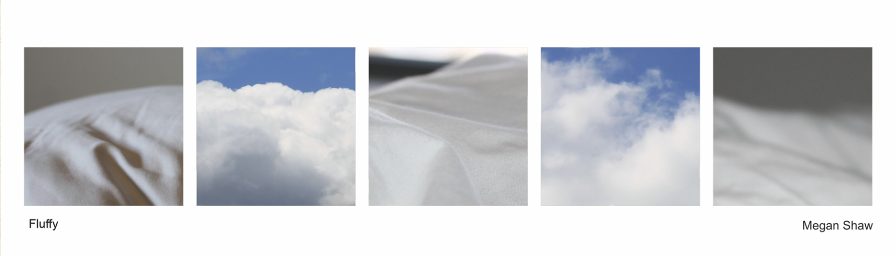
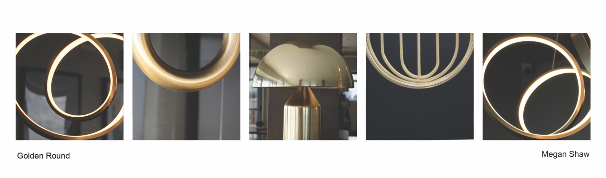
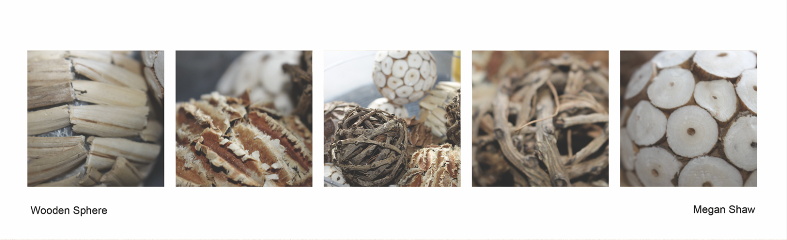
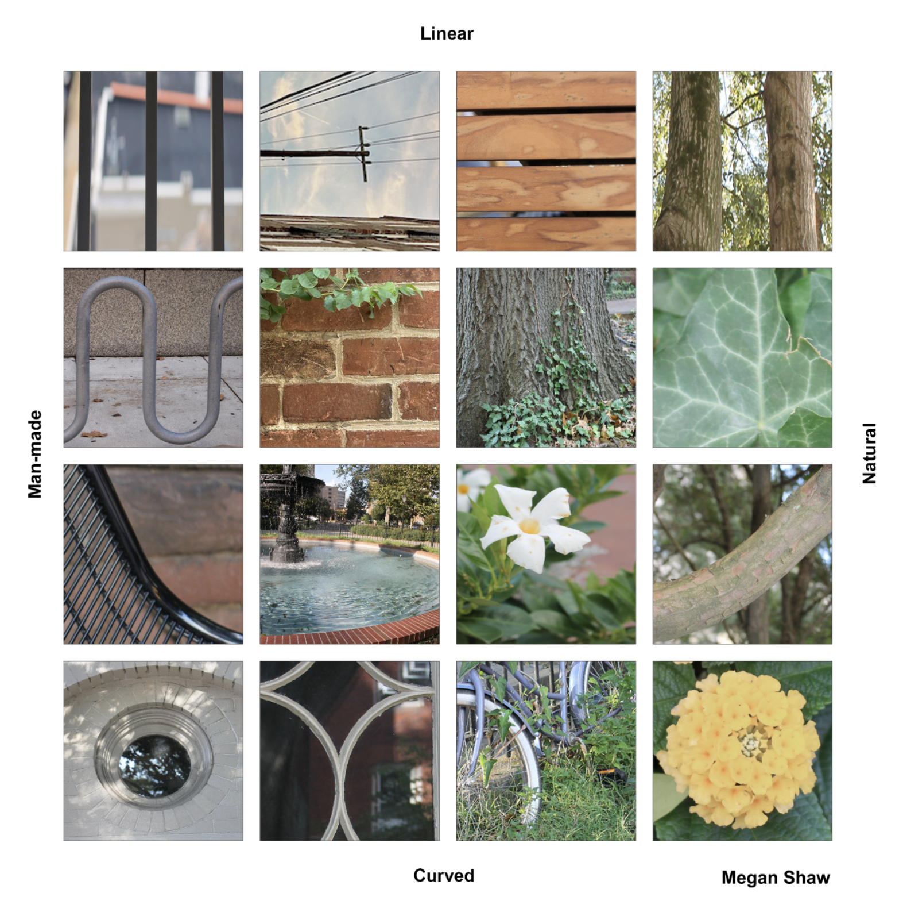
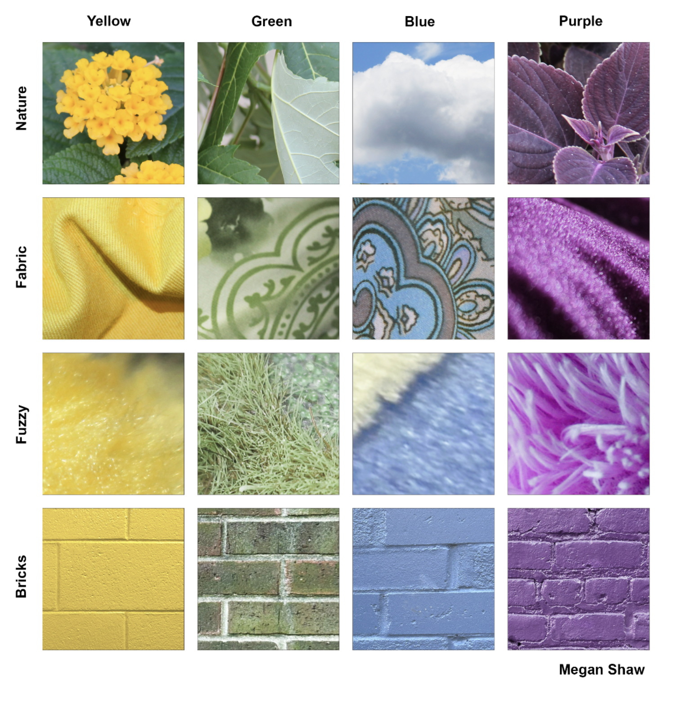
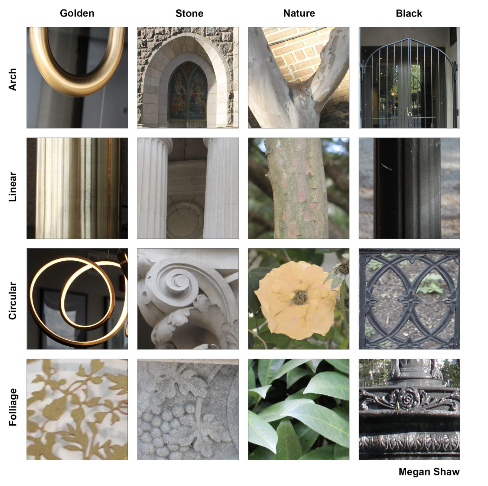

Photography Grids
2023



This project examines visual unity and theme contrast using 500 original photographs taken throughout the semester. In the first phase, we classified images based on aesthetics and form. We used the photo strip format to highlight balanced composition. This led to a detailed matrix that kept formal relationships but introduced conflicting themes. The goal was to challenge visual harmony and structural organization.


